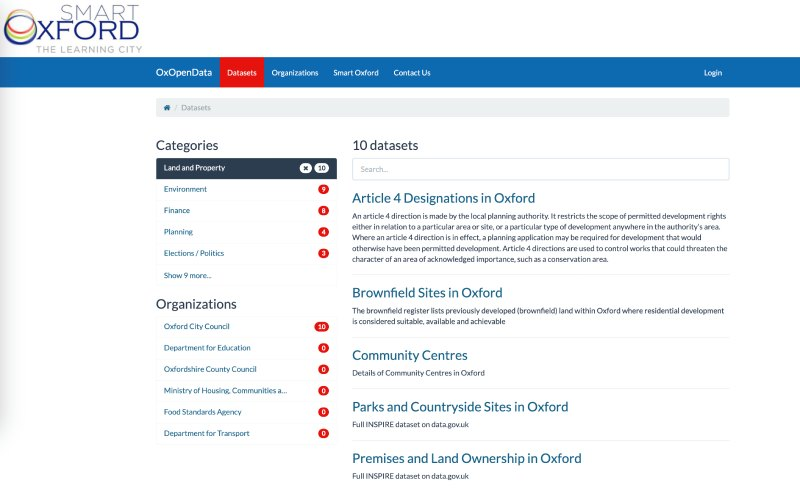

I decided to post about this project as I recently came across some old files while clearing my laptop. Also, I'm amazed to see the site is still running with its domain name intact.
Back when I was Digital Development Manager at Oxford City Council I had a broad (unfocused?) remit to 'do' digital things, one of which was looking into how we could further aspirations to publish open data.
Some of the requirements to do this were enshrined in law (mostly environmental data) but the Economic Development team were really keen to do something as it could support business. It actually got built into the Digital Strategy of the time.
The council was working alongside Oxfordshire County Council to move this along, and some funding had been found to use a platform by Socrata, which was at a cost of £10k per annum (apparently a significantly reduced premium). But this couldn't be sustained, so a low cost alternative was needed.
With no funding in sight I looked at obvious candidates like data.gov.uk for just hosting datasets, but felt this wouldn't encourage non-traditional users to get involved.
CKAN was the technology running data.gov.uk, and being open source felt like a contender. But the technical know-how required to get it up and running were beyond me.
There were a few lower-cost platforms, and Devon County Council had done some great work just using Wordpress and some Python.
Then I came across a Jekyll-based CKAN alternative that was designed to work on GitHub Pages
JKAN is a project by Tim Wisniewski, back then the Chief Data Officer at the City of Philadelphia (but now heading the tech side at Citizen's Advice here in the UK).
As he puts it on the JKAN site:
Open-source data portals can be really hard to install and maintain. But their basic purpose of providing links to download data really isn’t that complicated. JKAN is a proof-of-concept that allows a small, resource-strapped government agency to stand-up an open data portal by simply clicking the fork button.
The instructions were easy to follow, and options to style the site were simple to grasp.
A key advantage of the platform was that it allowed me to be really flexible in:
Having the right platform was only the start. To get data into a reasonable format and make it presentable I used a suite of additional tools. Most of these I learned about through an excellent one-day course at the ODI
These included:
The most important one, and a great partner for using with JKAN, was Octopub. This took datasets, checked their quality, created a repo for each one and allowed for metadata to be added.
I was pretty pleased with the overall project, which has been a solo effort (showing how much you can do with the right tools)
The longer term solution (for Oxfordshire County Council at least) was a bundled open data platform that comes with the hefty price tag for an ArcGIS subscription. These also offer the advantage of displaying map-based datasets really well)
My reflections on this project are: